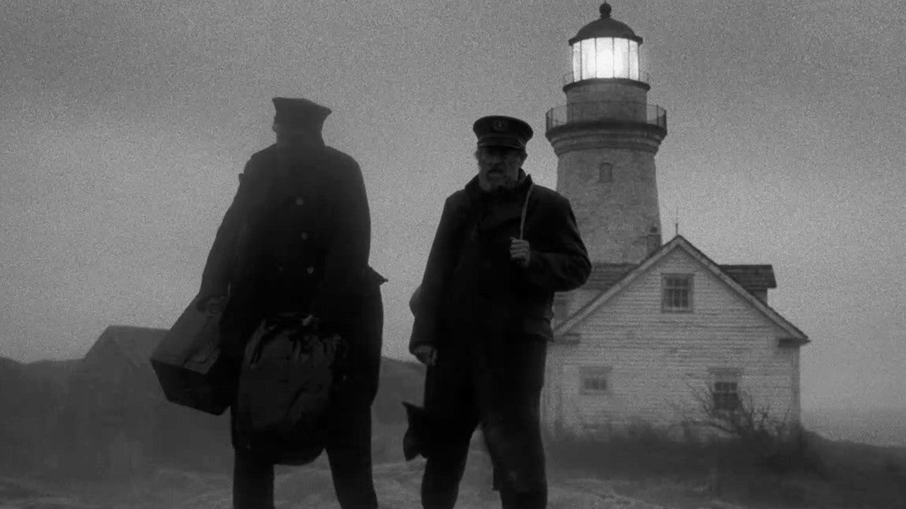

<…> Входит некто православный, говорит: «Теперь я — главный. У меня в душе Жар-птица и тоска по государю. Скоро Игорь воротится насладиться Ярославной. Дайте мне перекреститься, а не то — в лицо ударю. Хуже порчи и лишая — мыслей западных зараза. Пой, гармошка, заглушая саксофон — исчадье джаза». И лобзают образа с плачем жертвы обреза… <…>